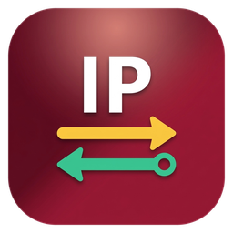
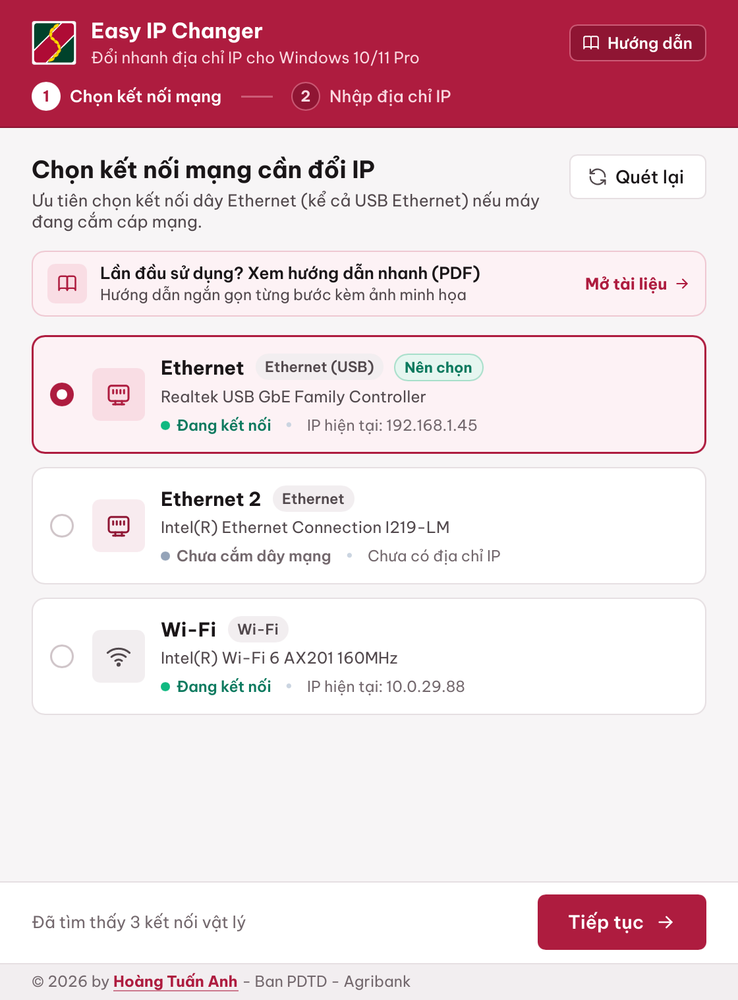
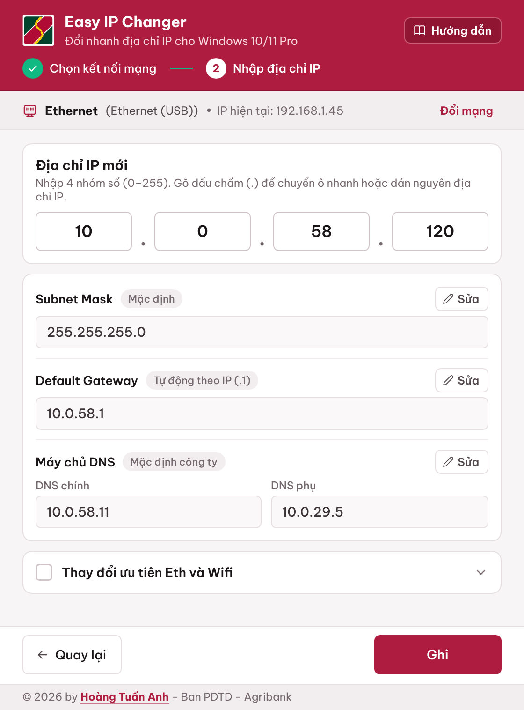
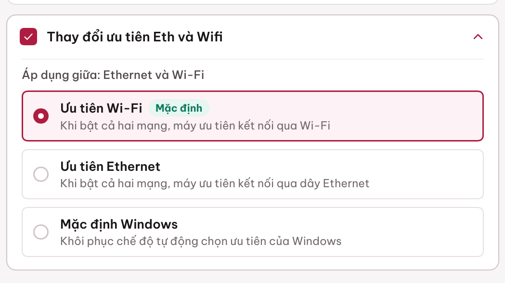
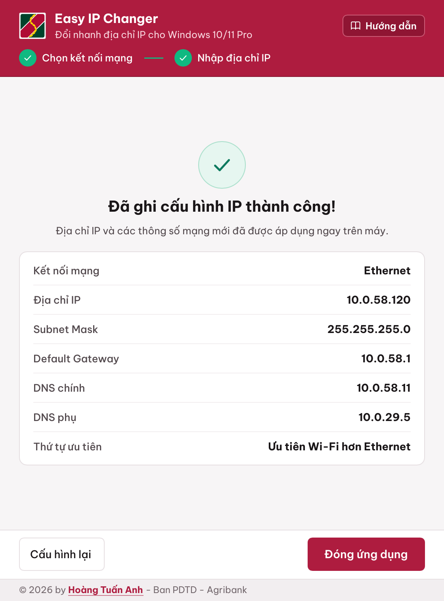

Mở file ứng dụng và bấm Yes khi Windows hỏi quyền thay đổi mạng.
Chọn mạng dây Ethernet (thường đã chọn sẵn) hoặc Wi-Fi cần đổi IP.
Gõ 4 nhóm số IP mới, giữ nguyên các mục đã khóa sẵn rồi bấm Ghi.
Nhấp đúp chuột vào tệp easy-ip-changer.exe trong thư mục vừa giải nén.
Để đổi được địa chỉ IP, Windows sẽ hiện bảng hỏi quyền Quản trị (User Account Control). Hãy bấm nút Yes (hoặc Có) để vào ứng dụng.
Khi giữ tệp Huong-dan-su-dung.pdf cùng thư mục với ứng dụng, bạn có thể bấm nút Hướng dẫn ngay trên cửa sổ ứng dụng để xem lại tài liệu này.
Đây là cảnh báo quen thuộc của Windows với tệp tải về mới. Bạn chỉ cần bấm dòng chữ More info (Thông tin thêm) rồi bấm nút Run anyway (Vẫn chạy) để mở bình thường.
Ứng dụng tự động lọc bỏ các card mạng ảo và chỉ hiển thị kết nối thật (dây Ethernet, USB Ethernet và Wi-Fi) để tránh chọn nhầm.

Nếu máy đang cắm cáp mạng, mục Ethernet có nhãn xanh Nên chọn sẽ được chọn sẵn.
Nếu máy có nhiều cổng mạng, hãy chọn mục đang có chấm xanh Đang kết nối.
Nếu bạn mới cắm dây mạng hoặc bộ chuyển USB Ethernet sau khi mở ứng dụng, hãy bấm Quét lại để cập nhật danh sách.
Sau khi chọn đúng kết nối cần đổi IP, bấm nút Tiếp tục → màu đỏ ở góc dưới bên phải để chuyển sang Bước 2.
Mỗi mục đều hiển thị sẵn trạng thái (Đang kết nối / Chưa cắm dây mạng) và địa chỉ IP hiện tại của máy để bạn dễ đối chiếu.
Nếu máy chưa cắm dây mạng (chỉ có Wi-Fi), ứng dụng sẽ hiện khung cảnh báo màu vàng và không tự chọn Wi-Fi để tránh bạn đổi nhầm. Hãy cắm lại cáp mạng rồi bấm Quét lại, hoặc chủ động nhấp chọn Wi-Fi nếu bạn thật sự muốn đặt IP tĩnh cho Wi-Fi.

Gõ lần lượt 4 nhóm số (từ 0 đến 255). Mẹo nhanh: gõ dấu chấm . để tự nhảy sang ô kế tiếp, hoặc dán Ctrl+V nguyên địa chỉ IP (vd: 10.0.58.120).
Subnet Mask, Default Gateway (tự động điền theo 3 số đầu của IP + .1) và Máy chủ DNS đã được điền đúng chuẩn và khóa an toàn. Chỉ bấm nút Sửa khi có hướng dẫn riêng từ bộ phận kỹ thuật.
Nếu chỉ cần đổi IP thông thường, bạn có thể bỏ qua mục này. Chỉ tích vào khi muốn chọn mạng ưu tiên (xem mục bên dưới).
Kiểm tra lại dãy số IP một lần nữa rồi bấm Ghi. Ứng dụng sẽ tự áp dụng cấu hình sau khoảng 1–2 giây.


Khi thấy dấu tích xanh "Đã ghi cấu hình IP thành công!", toàn bộ thông số mới đã được áp dụng ngay lập tức — bạn không cần khởi động lại máy tính.
Nếu phát hiện gõ nhầm số IP hoặc muốn đổi thêm thứ tự ưu tiên, hãy bấm Cấu hình lại để quay về Bước 2.
Bấm Đóng ứng dụng. Hãy mở trình duyệt hoặc phần mềm nghiệp vụ để kiểm tra kết nối đã thông suốt.
Trên cửa sổ Windows protected your PC, bấm dòng chữ More info (Thông tin thêm) rồi bấm nút Run anyway (Vẫn chạy).
Kiểm tra lại dây cáp mạng hoặc đầu chuyển USB-LAN đã cắm chặt chưa, chờ 3 giây rồi bấm nút Quét lại ở góc trên bên phải.
Kiểm tra cả 4 ô IP đều đã điền đủ số từ 0 đến 255 và không để trống ô nào. Nếu báo trùng IP, hãy kiểm tra lại số IP được cấp.
Nếu máy vừa cắm dây mạng nội bộ vừa dùng Wi-Fi, hãy bấm Cấu hình lại, tích Thay đổi ưu tiên Eth và Wifi rồi chọn Ưu tiên Wi-Fi.